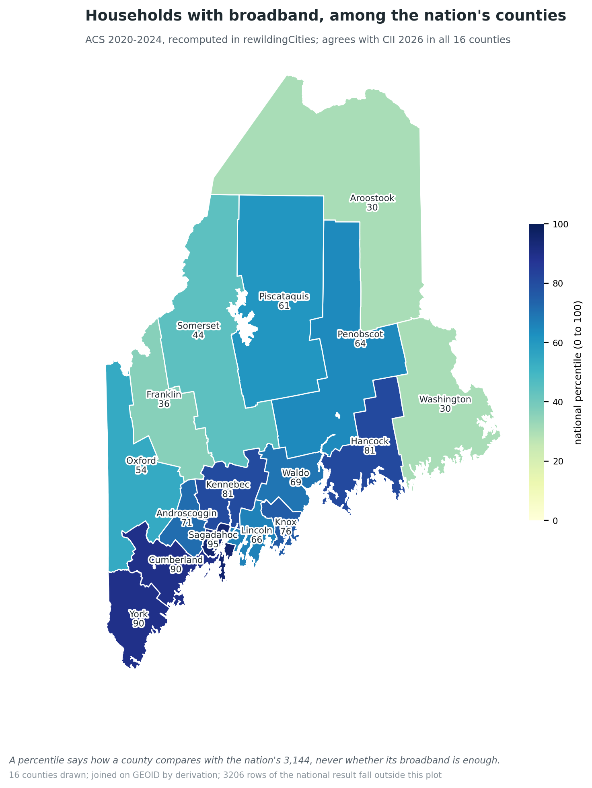

How this differs from a conversational tool
A conversational interface is a way of asking: it helps a person retrieve, phrase and summarise. It keeps no record of how an answer was produced, and an answer that looks right is indistinguishable from one that is right. This pipeline determines what can responsibly be computed and published. Its New York park-cooling analysis once produced plausible temperatures, a textbook monotone gradient, complete provenance and nineteen of twenty-five features reporting success, and was void: a cropping step had masked 99.4% of the raster, the median park held fifty-four valid cells within three hundred metres, and the 0.35 °C gradient sat below the sensor's noise floor. The warnings travelled with the result, and the precondition gate now refuses to build on such inputs.
The two are complementary. A conversational layer is more useful on top of infrastructure that can tell it what the data does and does not support.
Verified figures, Maine
| 16 | Maine counties conformed and cross-verified against Census TIGERweb |
| 7 196 → 16 | County source polygons reduced to administrative units |
| 7 156 | Island polygons excluded, explicitly, on a named attribute |
| 463 / 461 | Maine civil divisions self-governing vs under state jurisdiction |
| 459 / 529 | Maine county subdivisions that are active governments |
| 0 / 586, 0 / 862 | Active governments among county subdivisions, Georgia and Texas |
| 48 / 48 | Maine county values that agree with the Civic Information Index at its published precision |
| … | HTTP routes in the read and act faces, read live from the API |
What is built
Each component below exists, runs, and is covered by tests. The table names the failure each one prevents.
| component | what it prevents |
|---|---|
| Envelope contract | A result circulating without a verifiable record of how it was made |
| Precondition gates | Building a conclusion on inputs an earlier step flagged as unreliable, or that never passed through a required step |
| Semantic typing | Joining a per-park table to a per-ring table because both happen to carry an identifier column |
| Indicator and weighting registries | A variable code, a direction or a weight written in more than one place and drifting apart |
| Coverage floors | Reporting a confident figure from a raster that is almost entirely empty |
| Frame law | Cataloguing spatial data with no declared coordinate system |
| Loud vocabulary | A renamed folder silently reducing the type dictionary to half its definitions with no error |
| Consent tiers | Publishing mutual-aid networks or sovereign boundaries as named features |
| Reduction accounting | A geometric aggregation inventing an attribute value for a group, or giving distinct units one geometry |
| Re-derivability | The catalog drifting out of step with the data it describes |
Community data is declared in a manifest
Every plot has a manifest.yml: a list of datasets stating what each one is, where it comes from, where
its copy lives, and whether it is currently accessible. Each dataset carries a semantic type, which opens valid analytical paths
between datasets. A dataset the community wants but has not acquired can still be declared and marked unavailable. A declaration
missing its semantic type, format or cache path is recorded as underspecified and refused, never defaulted.
governance_unit_county:
available: true
semantic_type: governance_unit
format: geojson
source:
type: api
provider: arcgis_rest
item_id: b47e1e44ce70411f91fe4c1c3f4c7cd6
layer: 1
cache:
path: .data/maine_counties.geojson
| dataset | type | status |
|---|---|---|
| governance_unit_county | governance_unit | available |
| governance_unit_town | governance_unit | available |
| acs_county_2024 | indicator_source | available |
| acs_us_county_2024 | indicator_source | available |
| cii_2026_published | indicator_source | available |
| county_locations_2024 | unit_locations | manual |
| formal_outlet | formal_outlet | sought |
| institutional_node | institutional_node | sought |
| access_infrastructure | access_infrastructure | sought |
Coordinate policy: EPSG:4326 is the interchange frame in which vectors rest; EPSG:26983 (Maine East) is declared for metric work. Rasters are never reprojected for storage, because resampling a measurement alters it.
presenter notes
- Open the manifest:
less plots/maine/manifest.yml. Point at the header that declares what is deliberately absent, and at the county dataset's item id. - Say: a declared-but-absent dataset is a legitimate state, and its absence is reported in the method author's words.
Acquisition through providers
A provider is a protocol for acquiring data from an external source. New protocols, such as a directory scraper,
are new Provider subclasses declaring can_handle and implementing acquire, without touching the
pipeline. Current providers cover ArcGIS REST, Socrata, STAC, direct URL, S3, Google Earth Engine, local files, manual placement,
and the Census ACS.
Properties that matter
- Sensing before fetching. The system asks whether acquisition is feasible (network, credentials, disk) before committing, so the cost of a dataset is known in advance.
- Durable identifiers. ArcGIS sources are declared by item id, not URL, because a republished layer keeps its id and loses its URL. The provider resolves the address at fetch time and records which one it used.
- Registry-driven variables. The ACS provider fetches whatever variables the declared indicators require, margins of error included, and records the vintage window, not only the year.
$ python -m canopy.cli acquire maine --type indicator_source --fetch
acquired:
~ indicator_source (acs_us_county_2024)
Fetched from the Census ACS ~ 3222 county(s); vintage 2020-2024 (5-year estimates); 10 variable(s)
more than one holding offers this:
~ indicator_source
2 datasets provide 'indicator_source'; which one is a choice for you, not for the engine.presenter notes
- Sense without fetching:
python -m canopy.cli acquire maine --type indicator_source. It reports what is held and acquirable, and names the two-source choice.
Analytical primitives
Each primitive does one thing (validate a vector layer, repair geometry, reproject, dissolve, derive an indicator, standardise, impute, compose an index) and follows one contract: three JSON arguments in, one JSON object out. The orchestrator dispatches on file extension, so an R primitive and a Python primitive are interchangeable. A primitive never writes its own provenance; it reports what it did and what it noticed, and the system assembles the record around it. Each primitive's registry entry declares its inputs by semantic type, its parameters, and its preconditions.
| primitive | layer | does | verified against |
|---|---|---|---|
| derive_indicator | roots | Ratios of summed counts or published passthroughs, by declaration; long-form output | Python preview, exact |
| standardize_indicator | roots | Oriented z-score and percentile against a declared reference population | Python oracle; CII's percentiles |
| impute_nearest_neighbor | roots | Two stages: the ten most similar complete units, then the nearest; every value flagged with its donor | Python oracle, exact |
| weighted_index | roots | Weighted pillar means and composite, all-or-nothing on components | Python oracle, exact |
| assign_geoid | soil | A Census GEOID derived from a layer's own county code, refusing ambiguity | Maine's sixteen counties |
The envelope system of provenance
Every artifact has an envelope beside it: a JSON record in four parts, validated against a schema on every write. A primitive emitting malformed metadata fails immediately rather than producing a subtly wrong record.
| part | holds |
|---|---|
| data | Where the file is and its format |
| metadata | What the data is: semantic type, frame, feature count, coverage, join keys |
| provenance | An append-only chain: primitive, version, parameters, inputs, hashes |
| warnings | Everything noticed, at info, warning or critical |
Provenance accumulates, so a final artifact knows its whole history; warnings never disappear, so nothing downstream can quietly resolve one. Indicator definitions enter parameters by reference and are recorded with the sha256 of the file they were read from, so envelopes produced from different versions of one definition remain distinguishable.
presenter notes
- Show one envelope raw:
python -m json.tool plots/maine/.envelopes/standardize_standings.envelope.json | less. Point at the provenance params: the full cii_broadband declaration and its declaration_sha256. - Then click through the lineage panel on this page: standings, derived values, the acquired source.
Semantic typing and the indicator registry
A method declares "I need governance units and formal outlets", not "I need two vector files". Each type carries its category (which decides the metadata it must have), its format, and its consent tier, and the vocabulary refuses to load if it contains a contradiction: a name defined twice, an alias claimed by two types, an incomplete definition, or a missing domain folder. Above the types sits the indicator registry: an indicator is a claim, not a type, declaring which numerator over which denominator, in what unit, which direction is better, how it may be aggregated, and where its uncertainty comes from.
| type | shape | holds | consent tier |
|---|---|---|---|
| formal_outlet | vector | Print, broadcast, digital and radio outlets | public |
| institutional_node | vector | Libraries, town halls, schools, government sites | public |
| access_infrastructure | raster | Broadband, cell and cable availability | public |
| indicator_source | tabular | Raw published values a derivation reads | public |
| indicator_values | tabular | Derived measurements, one row per unit and indicator | public |
| indicator_standings | tabular | Z-scores and percentiles against a declared population | public |
| indicator_index | tabular | Weighted pillar and composite indices, naming their weighting | public |
| unit_locations | tabular | One representative point per unit | public |
| ownership_concentration | tabular | Consolidation score per unit (derived) | public |
| community_context | tabular | Demographics, rurality, language, participation | custom |
| relational_hub | vector | Forums, groups, listservs, mutual-aid networks | aggregate-only |
| flow_edges | tabular | Pathways between node types (derived) | excluded |
presenter notes
- Count the vocabulary before quoting a number:
python -c "from canopy.vocabulary import Vocabulary; v=Vocabulary.load('seeds/schemas'); print(len(v.canonical))" - The registry:
ls seeds/indicators/, then open cii_2026.yml at cii_rent_burden, which declares aggregation: none and says why.
Consent tiers
Every semantic type carries a resolution_tier. The system may compute with sensitive information internally;
the tier governs what may be published, and how. public may be published to the world. aggregate-only may be reported
as a count ("this county has twelve community information hubs"), never as named locations, to avoid enabling surveillance of community
activity. custom requires explicit, named consent: sovereign_boundary layers enter only on terms a nation sets, under CARE
and OCAP principles, because the barrier should be consent rather than difficulty; community_context is individually public but
combinable into re-identification risk at fine grain. excluded is not reported at all. The tiers are declared and travel with every
type; the exposure gate that enforces them at publication is described in Part III.
The loam catalog
A DuckDB catalog with one row per artifact in three tiers. Every column is a projection of a named field from an envelope or a manifest; a field the metadata does not carry is stored as empty, never guessed. The catalog is deleted and rebuilt from the receipts each time a plot is opened, so opening a plot is idempotent and the catalog cannot drift from the data. Rules apply on entry: spatial data needs a declared frame, data that has been through a lossy reduction is refused, and coverage below half is flagged.
Holdings by tier
| reading |
presenter notes
- Open the plot and query the catalog directly:
python -c "from canopy.wonder.session import open_plot; v,l,r=open_plot('maine'); print(r); print(l.find(plot='maine', tier='tended')[:3])" - Say: delete
plots/maine/.loam/loam.duckdband the next read rebuilds it identically from the manifest and the envelopes.
Readiness: what the ground can answer
A curiosity is a question and declares no data. A method declares what it requires, each requirement with its role and the cost of its absence in the author's own words. The read model weighs every curiosity's methods against what the loam holds and returns a verdict: runnable, runnable with uncertainty, or blocked, naming what is missing. A curiosity with no method is reported as awaiting one rather than offered every method in its domain. Raw sources that a derivation reads as acquired satisfy a requirement only when they are declared available and present on disk.
Curiosities, information domain
| reading |
$ python -m canopy.cli wonder maine
planted 9 declared holding(s) from the manifest
tilled 10 envelope(s) from plots/maine/.envelopes
🌱 you can explore this today
your question: "Can households here get online, and do they?"
the way in: Civic Information Indicators from Published Sources
what your community already has: indicator_source
choices that would be yours to make:
~ reference_population: Who a unit is ranked against. CII ranks every
county against the nation's 3 144.presenter notes
- Run it live:
python -m canopy.cli wonder maine. Point at reference_population: the choice is named in the open, in the method author's words. - Ask in plain words:
python -m canopy.cli wonder maine "broadband"
Experiments: composition and orchestration
An experiment binds one curiosity to one method on one plot. A method may declare a recipe; compose fills its
compose-time references from the question and the manifest and writes a complete experiment, so the file is a full account of what will run.
The orchestrator then reads the experiment and manifest, orders the steps, resolves data (present, acquirable or blocked), checks each
step's preconditions, runs the primitive, builds the envelope, threads it forward, and writes a run log.
| reference | resolved | becomes |
|---|---|---|
| $requires.<name> | compose | The dataset bound to a requirement; several candidates are refused unless chosen |
| $curiosity.indicated_by | compose | The sub-question's indicators the bound source serves; others are named with the source that serves them |
| $weighting.<id>.components | compose | Every indicator a declared weighting names |
| $source.<fact> | compose | Authority, vintage window and unit key of the bound source |
| $indicators · $weights · $choices · $steps | run time | Hashed declarations, choices, upstream outputs |
>>> compose(loam, "maine", "broadband_access", "cii_indicator_values",
... sub_question="subscription",
... chosen={"datasets": {"source": "acs_us_county_2024"}})
the choices, named in the open:
~ reference_population: defaulted to 'nation_50_states_dc' (yours to change)
~ source: bound to acs_us_county_2024
~ also answered by cii_pub_broadband (cii_2026): served by cii_2026_published$ python -m canopy.cli sows plots/maine/experiments/maine_broadband_access_subscription__cii_indicator_values_91b5c0.yml
✓ Experiment complete: 2 steps executed
Steps: derive → standardize
Final envelopes:
derive: plots/maine/.data/derive_values.parquet
standardize: plots/maine/.data/standardize_standings.parquet$ python -m canopy.cli sows garden/experiments/demo_precondition_gate.yml ✗ Experiment failed Failed at step: standardize Precondition not satisfied - provenance_contains: derive_indicator not satisfied (no input was produced by 'derive_indicator')
$ python -m canopy.cli sows plots/maine/experiments/maine_county_units.yml ✗ Experiment failed Failed at step: units_geoid County field not found No field 'CNTYCODE'. Fields: COUNTY
presenter notes
- Open the composed file:
less plots/maine/experiments/maine_broadband_access_subscription__cii_indicator_values_91b5c0.yml. Point at curiosity.ref, the bound $manifest source, and the literal $indicators list. - Show the gate live:
python -m canopy.cli sows garden/experiments/demo_precondition_gate.yml
Harvest: results onto geometry
A tabular result declares the vector layer it joins to. The harvest joins on a declared key, never on a column name that
happens to coincide: a long-form indicator table names its units by (us_census_geoid, code) and joins to a layer's GEOID,
which for Maine's counties is derived from the state's own county code (state FIPS 23 plus CNTYCODE, zero-padded). A layer without the key
is refused by name. Empty values are drawn as empty, never as the bottom of the colour ramp, and rows that match no feature are counted.
$ python -m canopy.cli map maine indicator_standings --indicator cii_broadband --layer units_geoid_with_geoid 🗺 mapped cii_broadband as a choropleth 16 features of units_geoid_with_geoid colored by percentile, joined on GEOID 3206 row(s) of the result matched no feature

map image not found; run demo/render_choropleth.py'">presenter notes
- Redraw if asked:
python demo/render_choropleth.py plots/maine/harvest/map_cii_broadband.geojson
Validation against the Civic Information Index
CII's method (reverse, standardise, impute counties missing exactly one indicator in two stages, weighted pillar means, a weighted composite, percentiles at each stage) is implemented as primitives. Three indicators were derived from raw ACS counts and compared with CII's published file within half a unit of CII's last published decimal, a precision inferred per column from the file's own formatting.
| reading |
Recovered rules
percentile = average rank of the oriented value ÷ the largest rank × 100
Recovered from CII's file across 3 144 counties; reproduces 26 of 27 per-indicator percentile columns, the remaining one failing only because its published raw values were rounded after ranking. Under ÷ n, agreement fails wherever the top value is tied, by up to 22 points. The pipeline's national standardisation reproduces CII's broadband percentiles for all sixteen Maine counties.
Imputation applies to exactly the 461 counties missing one indicator; the 163 missing two or more receive no overall index and only the pillars without a gap. Environmental Resilience has three members. On equal weights the pipeline orders counties as CII does at Spearman 0.988 to 0.999 per pillar and 0.987 overall; the residual is CII's unpublished advisory-group weighting.
Findings in the published index
- The ACS vintage is load-bearing and unrecorded: values differ by up to 4.2 points at 2019-2023 and agree exactly at 2020-2024.
- Rent burden is blank for 15 of the nation's smallest counties for which the Census publishes a value; ranking them shifts every percentile by up to 0.25 points.
- Volunteering is a state value, disclosed in the report and presented as county data in the file: 34.9 in every Maine county.
- The news-outlet column takes only 0, 1 and 2 nationally, unlike the per-capita rate described; the coding requires confirmation.
- Imputed values are unmarked. Here each names its donor, similarity and distance.
presenter notes
- Reproduce a column live:
python -m canopy.indicators.preview compare maine cii_rent_burden --cii garden/reference/cii_2026.csv --fips-column FIPS --dataset acs_county_2024
Defects identified and corrected
- Dissolve geometry assembly. Each group was unioned correctly, then assembled with
c()over bare geometries, which merges them; the single result was recycled across every row, giving each county the state's shape under its own name. It was detected when a choropleth rendered every county in one colour. The step now fails if geometry count differs from group count or any two units share a geometry, and a test exercises the real primitive on known shapes. County layers derived before the correction are being rebuilt. - Column-name rewriting. The CSV reader's default renamed non-syntactic columns, so a declaration naming a published column could not find it.
- Readiness for raw sources. A source read as acquired could never satisfy a requirement; requirements may now declare
as_acquired. - Registry drift. A primitive accepted parameters its registry entry did not declare; both are now aligned, and a comparison test is proposed.
For collaborators
The pipeline is a source of truth other tools can build on: dashboards, maps, a conversational layer, a statewide rollup. Everything is reachable through a read-only API, and new data, questions and methods enter through declarative files that the system validates before it uses them.
Connecting a tool: the API
The read face projects one read model, so the CLI, the API and any downstream tool report the same answer about the same ground. Responses are JSON; interactive documentation is generated from the code at /docs. A conversational layer should call these routes rather than reason about the data itself: they say what the data does and does not support.
| reading the API's route list |
presenter notes
- Open
localhost:8000/docsin a tab and try/plots/maine/reading: the same verdicts the CLI prints, as JSON.
Adding new data
- Declare it in the plot's manifest with a semantic type, format, source and cache path. It may be declared before it exists; the read model reports it as sought, and what its absence costs.
- If it can be fetched automatically, use an existing provider, or add a
Providersubclass declaringcan_handleand implementingacquire. Acquisition is thenacquire <plot> --type <type> --fetch, recorded in an append-only changelog. - If it is a new kind of thing, declare a semantic type in the domain vocabulary with its category, format and consent tier. The vocabulary refuses a name defined twice.
- If it measures something, declare an indicator in
seeds/indicators/: derivation, unit, direction, aggregation, uncertainty. Areplicatesblock is added only after the indicator has been checked against its published source.
formal_outlet:
available: false
description: Maine local news outlets with owning entity
semantic_type: formal_outlet
format: geojson
source:
type: manual
notes: >
Reconcile the Maine Press Association list,
FCC licences and publisher mastheads.
cache:
path: .data/maine_outlets.geojson
provenance:
source: Maine Press Association; FCC; mastheads
Proposing a question or a method
A question or an approach is proposed as a file. A curiosity ticket states a question without prescribing how to answer it; a method ticket states how, what it needs, and what each absence costs. Both are validated against their schemas before review, and the read model shows at once whether Maine's data can answer them.
# garden/curiosity-space/information/<id>.yml
id: library_reach
domain: information
question: Who lives beyond the reach of a public library?
significance: >
Where libraries carry civic information, distance
from one is distance from that information.
sub_questions:
library_use:
question: How much do people use their libraries?
indicated_by: [cii_pub_library_visits]
compatible_methods:
- ref: $methods/information/cii_indicator_values
fit: partial
sub_questions: [library_use]
version: 0.1.0
contributors: [your name]
# garden/methods/information/<id>.yml
id: library_distance
domain: information
name: Distance to the nearest public library
requires_data:
- name: libraries
type: vector
semantic_types: [institutional_node]
critical: true
role: Every public library, with its location.
uncertainty_without: >
Nothing to measure distance to.
- name: units
type: vector
semantic_types: [governance_unit]
critical: true
role: The units distance is summarised per.
uncertainty_without: >
No denominator; distance cannot be reported per place.
choices: {}
produces:
semantic_type: information_sufficiency
data_category: tabular
Validation before review
Curiosities are checked against seeds/schemas/curiosity.schema.yml (v1.1), methods against the method schema.
python -c "import yaml,jsonschema; s=yaml.safe_load(open('seeds/schemas/curiosity.schema.yml')); print([e.message for e in jsonschema.Draft202012Validator(s).iter_errors(yaml.safe_load(open('PATH')))] or 'valid')"Review checklist
- The question names no method and no dataset.
- Every
indicated_byid exists in the indicator registry. - Every
compatible_methodsref names a method by its index id, with an honestfit; an empty list declares that none exists yet. - Every requirement states its
roleand itsuncertainty_withoutin words a non-specialist can follow. - No requirement asks for a type above its consent tier.
- A new primitive ships with an independent implementation it is held to, and its registry entry declares every parameter it reads.
Designed, not yet built
Each item below is specified, and its absence is visible in the current system. None is presented as working.
The grove
A cross-plot catalog federating each plot's loam: a state as a hierarchy of plots (the state, counties and regions, towns, sovereign nations, watersheds), answering statewide queries such as which towns fall below information sufficiency or which counties are single-owner news markets, without copying data between plots. Until it exists, the national reference population for county standings is held in the Maine plot as a declared acquisition, and Maine's sixteen counties are a view onto it. The open question is how to admit community-declared data with standing equal to institutional sources; the measurement model already holds multiple authorities' claims about one unit side by side, and the grove must preserve that.
Granularity beyond the county
Units are (authority, code) pairs, and aggregation is declared per indicator (sum, population_weighted_mean, recompute, or none for medians). The minor civil division grain (924 divisions, roughly half without local government) is declared; tracts are acquirable through the same provider, with wider margins of error; a declared view step that narrows national standings to a plot's units is specified.
Exposure gate and publish latch
The gate enforces consent tiers at publication, between a deliberate, recorded aggregation step and anything that leaves the system. A publish latch will require an explicit request before any harvest reaches ArcGIS Online; until then, publication is a manual act.
Standards and coverage
A percentile states how a county compares, not whether its value is sufficient. Assessment against an absolute standard, adapted from UNESCO's right-to-information framework, is the next claim. Providers for the remaining 24 CII sources, and the four civic questions awaiting a method, form the research agenda.